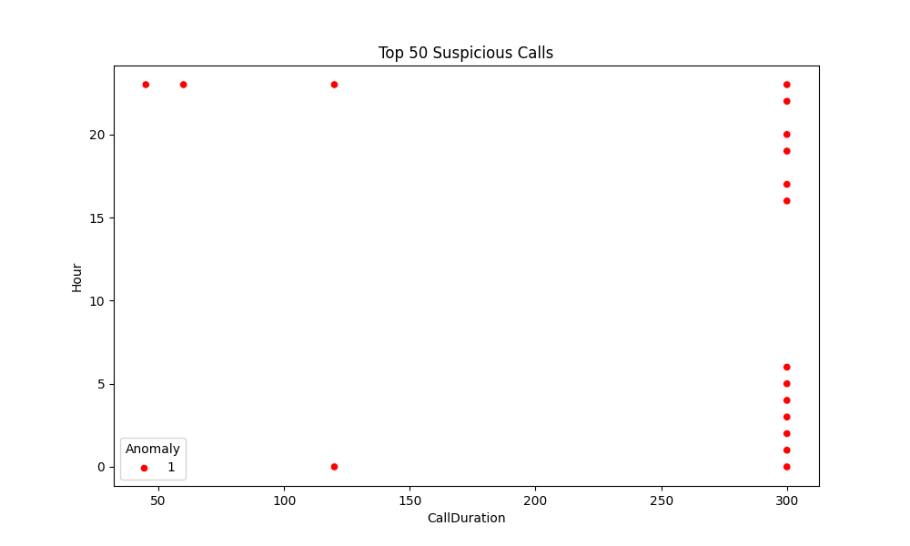
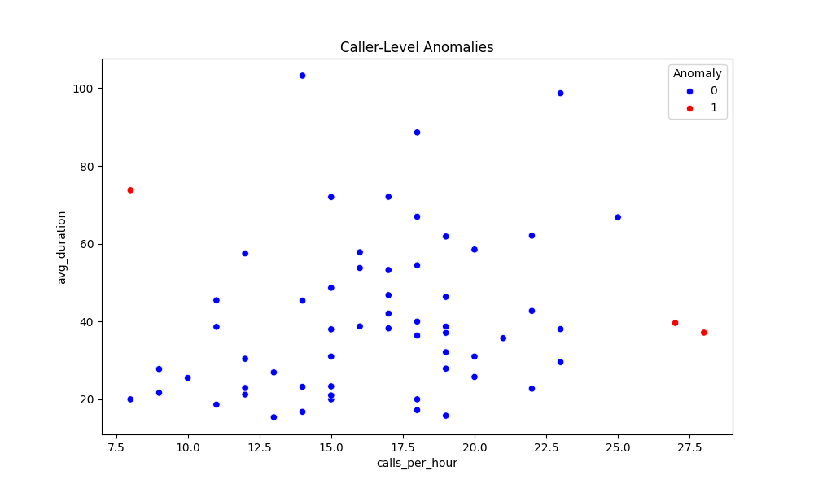
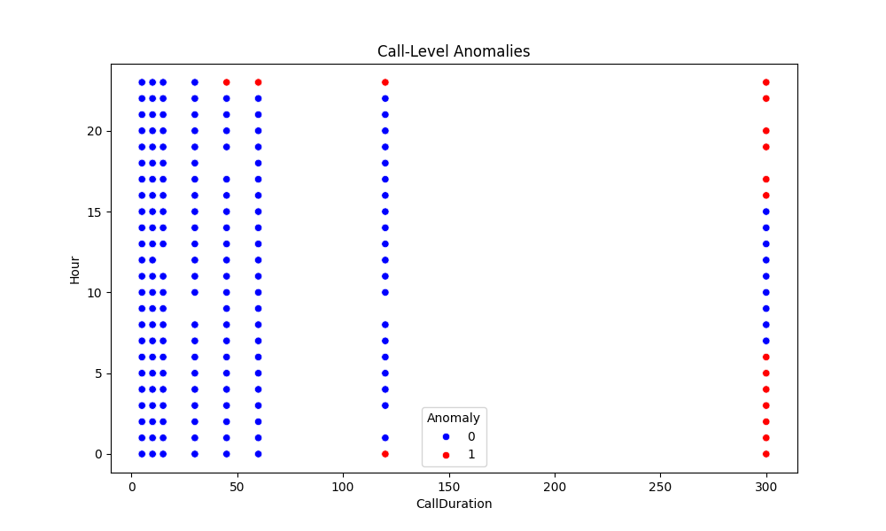

📡 SignalSentinel – Spam Call Anomaly Dashboard
This dashboard summarizes spam call anomaly detections using machine learning (Isolation Forest) and GxP-compliant logging.
🔎 Top 50 Suspicious Calls

📈 Caller-Level Anomalies

📊 Call-Level Anomalies
